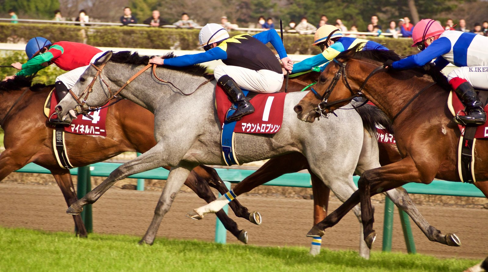

Ocho años de inhabilitación y 5.000 libras de multa para el entrenador Maurice Barnes
Un Panel Disciplinario independiente del turf británico aprobó un acuerdo de conformidad con Barnes, acusado de infringir normas sobre bienestar de los caballos, asistencia veterinaria y comunicación de la muerte de un ejemplar.

CC BY-SA 2.0
La vista se celebró el miércoles 30 de septiembre de 2026 por Zoom. En ella, un Panel Disciplinario independiente dio su visto bueno al acuerdo de conformidad propuesto en el caso de Maurice Barnes. La British Horseracing Authority (BHA) hizo pública la resolución el 13 de octubre.
Barnes estaba acusado de vulnerar cinco artículos del reglamento. El primero es la Regla (C)27, sobre la transferencia de los colores de carreras. El segundo, la (D)1, relativa a la seguridad y el bienestar de los caballos. El tercero, la (D)3.2, que obliga a solicitar y seguir el consejo de un veterinario. También se le imputaba la (D)21, que exige entrenar a los caballos con un cuidado y una pericia razonables. Por último, la (D)20 impone el deber de notificar a la BHA la muerte de un caballo bajo su responsabilidad.
Tras la aprobación del acuerdo, Barnes deberá pagar una multa de 5.000 libras. Además, queda inhabilitado durante ocho años para desempeñar cualquier función en las carreras de caballos, remunerada o no. Tampoco podrá solicitar su registro como empleado de cuadra conforme a la Regla (A)12.2. Por último, no podrá volver a pedir una licencia de entrenador durante un periodo de ocho años.
El Panel Disciplinario forma parte del Judicial Panel de la BHA. Se trata de un órgano independiente que agrupa también al Comité de Apelación y al Comité de Licencias. Recibe apoyo administrativo de la BHA a través del Judicial Panel Executive.
Resolución completa y motivos por escrito
Por Martín Larrañeta